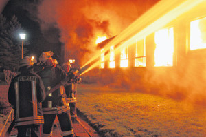

Kategorie: Nachhaltige Lebensstile, ethische Aspekte und Verbraucherinformation - "Verantwortung für das Leben · 27 Beiträge (statisches Archiv)
einwohner11.07.2012, 09:22 Uhr
Entfremdung der ländlichen Bevölkerung
Nach der Wende 89 haben bekannterweise tiefgreifende Veränderungen den Osten Deutschlands umgestaltet.
Eine Deindustriealisierungswelle ließ den Großteil der sozialistischen Großbetriebe untergehen. Doch im ländlichen Raum konnten große Strukturen, die sich durch die Notwendigkeit zur Genossenschaftsbildung nach der Bodenreform durchgesetzt hatten, überleben. Um sich aber, befördert durch die an Fläche gebundene Subventionen, im kapitalistischen Konkurenzkampf behaupten zu können, mußten sie zur Finanzierung moderner Landmaschinen Personalkosten sparen. Arbeitsintensive umweltschädliche Tierproduktionsanlagen wurden geschlossen. Die meisten der verbliebenen ca. 10% Beschäftigten der ehemaligen DDR-Landwirtschaftsbetriebe arbeiteten anschließend vor allem im Marktfruchtanbau.
Der Großteil der ländlichen Bevölkerung mußte sich vom Acker machen. Der Ablösungsprozess trieb die Jugend in urbane Ballungszentren, doch so mancher Ältere konnten als Vorruheständler im eigenen Hof verbleiben. [Anhang: <!-- ia0 -->cache_2426894228.jpg<!-- ia0 -->] (2011 ehemaliges Kulturhaus Neu Plötz bereits im Vollbrand)
Die auch in MV stattfindende Gentrifizierung verläuft hier aber anders als in der Stadt. Hier können Freiräume besiedelt werden, ohne die Verdrängung der alteingesessener Mieter, wie z.B. in der neuen Bundeshauptstadt.
Diejenigen, die dort dem Druck der Bonner Beamtenschaft auf das wiedervereinigte Zentrum nicht standhalten wollten, hatten als Alternative neben Ausreiseplänen ins fernere Neuseeland aber auch die Option, das nähere Landleben im Norden zu wählen. Und so konnten sich nachhaltige Lebensstile in der Uckermark entfalten. Die Milch vom Ökodorf Broduwin fließt bis ins schöne MV. <!-- m --><a class="postlink" href="http://www.brodowin.de/">http://www.brodowin.de/</a><!-- m -->
Aber auch hier haben interessante Naturräume ihre Ausstrahlung. Und so zog es eine beträchtliche Zahl von sogenannten Raumpionieren in unser Bundesland. Nicht wenige besorgte Mütter, die ihren Nachwuch vor schädlichen Abgasen u. Lärm bewahren wollten, brachten hier weitere Kinder zur Welt. Am Tollensetal im ehemaligen Kreis Demmin konnten dadurch so einige Dörfer vor dem Verfall gerettet werden.
Inzwischen aber sind die Kinder groß u. über die Schulen u. Gymnasien wieder in den Städten verschwunden.
In diesen Freiraum drängen jetzt immer mehr Massentierhaltungsanlagen, die bisher von jeder amtierenden Politik protegiert wurden.
Nicht zufällig titelte der NDR kurz vor Weihnachten im Vorjahr: "Backhaus will neuen Masterplan für Tiermast"
<!-- m --><a class="postlink" href="http://www.ndr.de/regional/mecklenburg-vorpommern/tiermast101.html">http://www.ndr.de/regional/mecklenburg- ... st101.html</a><!-- m -->
Doch die ehemaligen Städter haben inzwischen hier Wurzeln geschlagen u. leisten Widerstand.
So schlimm, wie die Ansiedlung Europas größter Ferkelfabrik am Tollensetal auch sein mag, etwas Gutes hat sie trotzdem. Wie an einem Modelprojekt können hier die negativen Auswirkungen auf Ökologie, Ökonomie u. soziale Belange im Kontext zu nachhaltigen Lebensstilen u. ethischen Aspekten untersucht werden.
Ich hoffe, dass die Perspektivkommission dieser Aufgabe gewachsen ist.
PS. Fakt ist: Die ersten Kinder aus der Stadt kommen zurück, mit Partnern u. Kindern u. ziehen andere nach! Der neue Heimatfilm wird noch eine Weile laufen... <!-- m --><a class="postlink" href="http://www.burg-klempenow.de/filmfest/">http://www.burg-klempenow.de/filmfest/</a><!-- m -->

cache_2426894228.jpg
Landmaus11.07.2012, 19:38 Uhr
Re: Entfremdung der ländlichen Bevölkerung
über das Thema Ethik möchte ich den vor dem Essen gebeteten Spruch stellen: " unser täglich Brot gib uns heute"
70 Jahre Frieden und Wohlstand in Deutschland sind ein kostbares Gut. Jeden Tag satt zu essen zu haben , war ein täglicher Wunsch aller Generationen vor uns. In allen Gesellschaftsschichten wußten vor 100 Jahren die menschen um die Sorge der Landwirte vor Mißernten, Seuchen und Unglücksfällen in der Landwirtschaft. Wenn heute oftmals in Unkenntnis und auch dem Mainstream folgend, Forderungen zur Landbewirtschaftung gestellt werden von Menschen, die nachweislich um die Produktion, Verarbeitung und Lagerung ihrer Lebensmittel keinerlei Kenntnis haben, dann ist das für beide Seiten- den Verbraucher- wie den Landwirt schlimm. Man kann von unserer Landwirtschaft zu Recht verlangen, dass gesunde Nahrungsmittel in ausreichender Form, Energieträgerproduziert werden sowie eine nachhaltig gepflegte Landschaft erhalten wird. Man sollte aber hierbei auch so fair sein, den landwirten für ihre Arbeit einen gleichen Lebensstandart zubilligen, wie man ihn selber haben möchte und das sind gerechte Entlohnung seiner Arbeit, Urlaub und angemessene Freizeit. Das alles erreicht man in den seltensten Fällen mit einem auf Milchtüten dargestellten folkloristischen Hof, der 20 Hühner, 3 Kühe und eine Bäuerin , die sanft in Joghurtschüsseln rührt protegiert. Auch der Landwirtschaft sollte man eine Modernisierung und Weiterentwicklung zubilligen, sonst wird sie von den ökonomischen Realitäten eingeholt.
Landratte12.07.2012, 17:36 Uhr
Re: Entfremdung der ländlichen Bevölkerung
Landmaus hat geschrieben: Das alles erreicht man in den seltensten Fällen mit einem auf Milchtüten dargestellten folkloristischen Hof, der 20 Hühner, 3 Kühe und eine Bäuerin , die sanft in Joghurtschüsseln rührt protegiert. Auch der Landwirtschaft sollte man eine Modernisierung und Weiterentwicklung zubilligen, sonst wird sie von den ökonomischen Realitäten eingeholt.
Na, da hat ja die Landmaus das Schlaglicht 2 in die Diskussion geworfen: "Das Bild der Land- und Ernährungswirtschaft in der Bevölkerung in Mecklenburg-Vorpommern ist zwar grundsätzlich positiv, aber über weite Strecken unrealistisch, zum Teil sogar idealistisch verklärt."
Das greife ich gerne auf. Natürlich sollte sich eine moderne Agrarindustrie auch in modernen Bildern zeigen können, dafür haben wir ja die modernen Marketingfirmen.
Über die Fleischtheken im Supermarkt gehören Panoramafotos modernster Schlachtfabriken: Innenaufnahme mit Förderbändern auf denen die Reise vom Lebewesen ins portionierte Endprodukt nachvollziehbar wird. Und Bilder von dichtgedrängten Tiermassen in ihren Fabriken zum Ende der Mastperiode, die das Herz des Betreibers in Gewinnerwartung höher schlagen lassen, könnten für die Frische der Erzeugnisse werben. Auf den Verpackungen u. im Stadtbild...
versehen mit dem bekannten Untertitel der Tabakindustrie.
Schwalbe12.07.2012, 20:10 Uhr
Re: Entfremdung der ländlichen Bevölkerung
@Landmaus: "Unser täglich Brot gib uns heute" aus dem Vaterunser ist eine Bitte, die den Menschen in vielen Teilen der Welt heute noch nicht erfüllt werden kann.
"Vergib uns unsere Schuld" geht es dann weiter. Weil wir im reichen Norden den Hals nicht voll bekommen, müssen andere leiden und hungern. Ackerflächen stehen nicht für die Produktion von Nahrungsmitteln zur Verfügung, weil dort Futterplanzen für die Tiermast angebaut werden. Bei uns liegt die Fleischtheke voll, anderswo fehlen Reis oder Getreide zum Überleben.
"Und führe uns nicht in Versuchung", dem Geld hinterher zu laufen und alles seiner Vermehrung unterzuordnen.
Landwirte dürfen natürlich Geld verdienen <!-- s:-) --><img src="{SMILIES_PATH}/icon_e_smile.gif" alt=":-)" title="Lächeln" /><!-- s:-) -->) nichts dagegen! Ich kenne einige hier in der Gegend, und die besitzen etliche Immobilien, investieren in Windkraftanlagen, Solarparks oder Biogasanlagen. Die hohen Subventionen die pro Hektar ausgereicht werden, bezahlen wir, die Steuerzahler. Dann möchte ich ja wenigstens, dass damit umweltbewusst gewirtschaftet wird, Tiere artgerecht gehalten und soziale Standards beachtet werden.
Jan Reimond12.07.2012, 21:38 Uhr
Re: Entfremdung der ländlichen Bevölkerung
@landmaus:
Ich habe grundsätzlich jeden Respekt vor unseren Landwirten angesichts ihrer immer noch oft harten Arbeit. Im Winter jeden Morgen um 5 Uhr in den Stall zu gehen, im Regen den Traktor durch den Matsch zu fahren oder Maschinen zu warten und abends noch die Abrechnungen und Formulare zu machen, ich wollte es nicht tun, und ich achte den Beruf.
Ich rufe - als Wochenend-ZweitsitzLandbewohner - auch nicht das Ordnungsamt, wenn es aus dem Kuhstall kräftig riecht o.ä.
Und ich akzeptiere als Steuerzahler auch prinzipiell Subventionen für die heimische oder von mir aus auch gesamt-europäische Landwirtschaft von Irland bis Rumänien.
Aber eine Expansion der Massentierhaltung in den jetzigen Dimensionen nehme ich nicht hin. Das ethische Bewußtsein vieler Menschen bzgl. der "Nutztiere" nimmt zu, und zugleich das Wissen um die gefährdete Natur/Umwelt/Biopshäre. Und das ist auch gut so. Eine Forcierung der Agroindustrie á la Backhaus+Bauernverband+Finanzbranche setzt eine neue Allianz von Verbrauchern+Naturschützer+Entwicklungsgruppen+Neue Landbewoher = FREUNDE DER ERDE ihren entschiedenen, gewaltfreien und zivilen Protest bis Widerstand entgegen. Notfalls vor Gericht, notfalls als Demonstration: bereits zweimal mit je 20 000 Teilnehmern zur "Grünen Woche" in Berlin !
Wie Mahatma Gandhi gesagt hat:
«Die Erde hat genug für die Bedürfnisse eines jeden Menschen, aber nicht für seine Gier.»
Landmaus15.07.2012, 10:20 Uhr
Re: Entfremdung der ländlichen Bevölkerung
darf ich ihnen allen vorsichtig nahe bringen, dass Sie nicht den Landwirt subventionieren sondern den Verbraucher? Niemand kann von Ihnen glauben, dass mit dem Preis von 0,75 € für das Stück Butter die Kosten gedeckt sind. die Gesellschaft leistet sich eine Deckelung der Inflationsrate auf Kosten billiger Lebensmittel- die sind in den letzten 30 Jahren nicht nennenswert gestiegen- im Gegensatz zu allen anderen Verbrauchsartikeln. Ebenfalls werden die Beträge, die den Landwirten gezahlt werden für Umweltauflagen, für Produktionsbeschränkungen und ähnliches gezahlt, die die Gesellschaft sich wünscht und eben auch dafür bezahlt. Wobei die Wünsche aus Teilen der gesellschaft sehr viel weiter gehen und nicht durch Zahlungen für den Bauern gedeckelt werden. So nimmt jede Umweltorganisation sehr gehr die Aussicht der Ansiedlung von Wolf, Biber, Kranich und weiterer Tiere für ihr Image in Anspruch, geschädigt werden die örtlichen Landwirte und niemand ist bereit, den Schaden auszugleichen. Das ist nicht gerecht und wird mit flapsigen bemerkungen duldend in Kauf genommen.
Auch würde ich mich sehr freuen, wenn mal einer den Begriff Groß und Klein, bäuerlich und industrielle Landwirtschaft für sich definieren würde. Im Kreis UER ( heute dem Großkreis VG zugeschlagen)gibt es viele Landwirtschaftsbetriebe mit mehr als 1000 ha, die von Genossenschaftsmitgliedern und ihren Familien bewirtschaftet werden, oder aber auch von mitarbeitenden Gesellschaftern, deren Tiere werden nach den Normen des Programmes tierartgerechte Haltung betreut, haben zum Teil halbjährlich Weidegang, bitte warum werden sie nur ihrer ha- Größe wie Umweltverbrecher hier dargestellt und diffarmiert?
AgrarStudent15.07.2012, 16:56 Uhr
Re: Entfremdung der ländlichen Bevölkerung
Sehr richtig! Die ganzen Subventionen dienen nur dazu dem Verbraucher scheinbar günstige Lebensmittel zu liefern. Dadurch muss der Verbraucher nur noch einen sehr geringen Teil seines Einkommens (ca.10%) für Lebensmittel aufbringen. Wenn man noch weiter ginge könnte man auch sagen, dass dadurch die Industrie gefördert, weil das restliche Einkommen dann für andere Güter ausgegeben werden kann. Aber die Förderung braucht ja die Landwirtschaft als schrumpfender Sektor für die "Einkommenssicherung". Das ist meiner Meinung nach Unsinn, denn die Gewinnmargen sind immer nur so groß, dass die mittleren Betriebe noch gerade überleben können. Sobald durch Subventionen oder Effiziensteigerung ein besseres Einkommen der Landwirte einstehen würde greift sich der Handel dieses spätestens nach 2 Jahren ab und durch den Konkurrenzkampf dort wird die an den Verbraucher weitergereicht. Meiner Meinung nach gehört daher die gesamte erste Säule der EU-Agrarförderung abgeschafft, da sie damit nicht den Sinn erfüllt den sie soll und zweitens nicht den Leistungen jedes einzelnen Betriebes gerecht wird.
Oh Schreck, das würde ja bedeuten, das die Lebensmittel teurer würden. Dann wären wir auf dem bösen bösen Weltmarkt nicht mehr Wettbewerbsfähig und Deutschland würde mit Lebensmittelimporten überschüttet
Da das die gesamte Eu betreffen würde, wären die Auswirkungen meines Erachtens nach nicht so groß wie angenommen. Und unsere lieben Verbraucher könnten beweisen wie viel ihnen heimische Prodkte wert sind. Weiter würde die Wertschätzung der Lebensmittel auf diese Weise wieder erhöht. Hierzu eine Aussage von Ilse Aigner während der Grünen Woche 2012:"Die Verbraucher in Deutschland wählten sehr stark nach dem Preis aus[…] Die Ministerin appellierte […], beim Lebensmittelkauf mehr auf Qualität zu achten. „Viele Verbraucher beschäftigen sich lieber mit neuer Technik, […]“, sagte sie. „Aber Essen und Trinken sind unsere Grundbedürfnisse. Ernährungsfragen sind entscheidend, und deshalb brauchen sie einen höheren Stellenwert in unserer Gesellschaft.“ (juj/dapd, 2012)
Die Tatsache das in Deutschland die Hälfte aller produzierten Lebensmittel weggeworfen werden sollte das noch unterstreichen.
Jeder Verbraucher hat es selbst in der Hand mit seiner Kaufentscheidung die Landwirtschaft zu fördern die er möchte. Das sollte jedem klar sein. Ein Abbau der Agrarförderung von Staatsseite würde diese "Macht" der Verbraucher noch erhöhen.
Schwalbe15.07.2012, 20:15 Uhr
Re: Entfremdung der ländlichen Bevölkerung
Ich vermisse auf tierischen Lebensmitteln eine verbindliche Kennzeichnung der Haltungsform. Nur dann habe ich als Verbraucher Wahlfreiheit und kann mich beim Kauf bewusst entscheiden. Bei den Eiern hat es ja geklappt! Ansonsten finde ich auch, dass Lebensmittel, bei deren Herstellung Wert auf Qualität und nicht nur auf Quantität gelegt wird, ihren Preis haben müssen und dass dann die Landwirte davon profitieren sollen.
Schwalbe16.07.2012, 08:15 Uhr
Re: Entfremdung der ländlichen Bevölkerung
In der Broschüre „Leben, arbeiten und erholen im ländlichen Raum“ (2009) finden sich Ausführungen von Jörg Kröger zum Unterschied zwischen Agrarindustrie und Landwirtschaft.
„Dass es sich beim Beispiel „Sauenanlage a la Straathof“ nicht mehr um Landwirtschaft, sondern um Industrie handelt, wird schon dadurch deutlich, dass außer dem Baugelände für die Fabrik weiter kein Boden benötigt wird. Es wird buchstäblich nicht mehr mit dem Land gewirtschaftet. Der Begriff Landwirtschaft trifft also schon rein vom Wortsinn her gar nicht zu. Alles was für die Produktion benötigt wird, wird zugekauft...
Seine Berufskollegen aus dem Bereich der noch auf dem Land unter freiem Himmel wirtschaftenden Agrarindustrie sind nicht ganz so leicht als Industrie zu erkennen.
Aber sie arbeiten seit der Wende nach einem ganz ähnlichem Muster: Mit immer größeren Betrieben und immer größeren Maschinen konzentrieren sie sich auf Feldfrüchte. Oder seit neuestem auf so genannte „Energiepflanzen“, die gar nicht mehr für den Verzehr durch Mensch oder Tier gedacht sind, sondern in Biogasanlagen vergoren werden sollen. Ich möchte diesen Bereich als Freiland-Agrarindustrie bezeichnen...
Auch wenn im Bereich der Freiland-Agrarindustrie die Grenzziehung zur Landwirtschaft nicht ganz einfach ist, liegen einige Kriterien für eine solche Abgrenzung auf der Hand:
die schiere Größe der bewirtschafteten Fläche und
die Anzahl der Beschäftigten pro Fläche...
Aber warum ist mir die begriffliche Abgrenzung der Agrarindustrie von der Landwirtschaft überhaupt so wichtig?
Die Landwirtschaft genießt im ländlichen Raum bis heute höchstes Ansehen in der Bevölkerung...Das liegt vermutlich an der sozialen Bedeutung als fast ausschließlicher Arbeitgeber und als Erzeuger des täglichen Brotes, die die Landwirtschaft einst besaß.
Zu DDR-Zeiten kam noch dazu, dass sogar die Infrastruktur der Dörfer weitgehend von den LPG´en zur Verfügung gestellt wurde. Die Landwirtschaft garantierte Leben und Überleben nicht nur für einen kleinen Bruchteil, sondern für die große Masse der Landbevölkerung.
Das ist heute natürlich anders. Die Landwirtschaft kämpft in vielen Bereichen selbst ums Überleben. Und oft ist der Grund dafür der Konkurrenzdruck, der von der Agrarindustrie ausgeht. Und wo bäuerliche Landwirtschaft verdrängt wird, füllt die Agrarindustrie nur zu gerne die Lücken. Was wir derzeit erleben, ist ein rasch fortschreitender Transformationsprozess, weg von der Landwirtschaft hin zur Agrarindustrie.
Parallel zu dieser Transformation ist die Tierhaltung in Mecklenburg-Vorpommern zurückgegangen, denn nur die Spezialisierung auf eine „Kernkompetenz“ ermöglicht das gewünschte Ausmaß an Kostensenkung. Die großen Marktfruchtbetriebe haben die Tierhaltung also zunächst meist einfach weg rationalisiert.
Dadurch stehen auf den Flächen jetzt weniger Tiere, als die Flächen bei einer gesunden Landwirtschaftsstruktur vertragen würden. Ein landwirtschaftlicher Betrieb hätte eine zur bewirtschafteten Fläche passende Anzahl von Tieren. Futter würde auf eigenem Land angebaut und der Mist dann auch auf eigenem Land als Dünger verwertet. Die Agrarindustrie dagegen hat diese Bewirtschaftungsmöglichkeit der Maximierung geopfert.
Noch schlimmer ist aber die von der Politik organisierte „Lösung“: Die landeseigene Landgesellschaft M-V verlangt seit einiger Zeit für die Verlängerung von Pachtverträgen, dass der verlängerunswillige Betrieb wieder auch Tierhaltung betreibt.
Weil sich die auf Marktfrucht spezialisierten Betriebe aber die damit verbundenen Risiken nicht antun wollen, suchen sie sich Kooperationspartner, die ihnen diese Auflage abnehmen. Was so entsteht, ist die unheilige Allianz der Freiland-Agrarindustrie mit den Agrarfabriken im Bereich der Tierhaltung. Denn die Riesenbetriebe vertragen rechnerisch auch große Tierzahlen. Aber die verteilen sich dann eben nicht auf 100 Betriebe zu je 100 ha, sondern werden an einem Standort zusammengeballt. Dies ist möglich, weil an die Haltungsbedingungen weiter keine Anforderungen gestellt werden. Dabei wäre dies ein durchgreifendes Steuerungsinstrument im Interesse der Umwelt, der Tiere und der wirklichen Schaffung von Arbeitsplätzen.“
„Tourismus oder Agrarindustrie am Tollensetal“ Jörg Kröger
AgrarStudent16.07.2012, 18:10 Uhr
Re: Entfremdung der ländlichen Bevölkerung
Im Prinzip ist das richtig, um wählen zu können muss man eine Wahl haben. Man sollte auch bedenken, dass man nicht nur zwischen Produkt A und Produkt B wählen kann, sondern auch zwischen den Einkaufsstätten und der damit verbundenen Firmenpolitik. Eine Auslobung des Haltungssystems auf dem Produkt stelle ich mir insofern schwierig vor, als dass es kaum Differenzierungen gibt. Demnach müsste auf sämtlichen Schweinefleisch bei den Discountern die Kennzeichnung "Aus Massentierhaltung" stehen?! Oder fachlich korrekt; aus moderner Schweinehaltung auf Vollspaltenböden?! Oder lieber die Göße; aus Betrieben mit weniger bzw. mehr als 1.000 Schweinen?! Ein Schnitzel was beim Discounter zum Dauerniedrigpreis angeboten wird kommt sicherlich nicht von einem Betrieb, der seine 10 Schweine noch "wie früher" hält, soviel sollte wohl klar sein. Fleisch was unter Kriterien, die über den "normalen" Anforderungen liegen, erzeugt wurde ist höchstwahrscheinlich auch so gekennzeichnet, um den höheren Preis zu rechtfertigen. Siehe Bio oder Quallitätsfleischprogramme wie Neuland. Und wenn man dem ganzen nicht vertraut, dann sollte man am besten direkt beim Bauern kaufen. Dies ist bei so sensiblen Produkten wie Fleisch die "sicherste" Lösung, ob Bio oder nicht. Und wenn man mal gar nicht weiß, dann kann man ja auch mal das Fleisch ganz weglassen, auch eine Möglichkeit.
Wenn mal eine Reportage über die "schlimmen Bedingungen" in deutschen Ställen, im Fernsehen läuft, dann sind die Landwirte wieder die bösen Tierqäuler. Am nächsten Tag wird dann aber weiter das billigste Schnitzel eingekauft. Sowas sorgt bei mir für Kopfschütteln!! Die Tierhaltung in Deutschland ist sicher diskussionswürdig, allen Beteiligten sollte jedoch klar sein, dass der Verbraucher nicht ganz unschuldig daran ist.
landkind16.07.2012, 18:50 Uhr
Re: Entfremdung der ländlichen Bevölkerung
Schwalbe hat geschrieben:
Ich vermisse auf tierischen Lebensmitteln eine verbindliche Kennzeichnung der Haltungsform. Nur dann habe ich als Verbraucher Wahlfreiheit und kann mich beim Kauf bewusst entscheiden.
Das ist doch ein schönes Beispiel für den "ach so mündigen" und vor Allem "aufgeklärten" Verbraucher"! Brauchen wir neben x Biolables, Gütesiegeln, QS und ich weiss nicht was noch für Kennzeichnungen noch eine weitere für unsere Verbraucherglück? Inklusive bürokratischem Aufwand und verbundener Zwangsabgabe, die die Produzenten zu leisten haben?
Wie war denn das damals mit den Eieren und den zahlreichen, bewusst entscheidenden Verbrauchern? Jeder kann sich mit Sicherheit noch an die Berichte von Menschen erinneren, die mit noch leerem Einkaufswagen Käfigeier verdammten und dann mit ebendiesen aus dem Supermarkt geschoben kamen.
Was bedeutet denn überhaupt Massentierhaltung? Wer hat diesen Begriff jemals definiert. Wo ist die Grenze? Bei 100, 1000 oder 10.000 Tieren? Oder geht es um m² pro Tier?
Manchmal tut mir der Verbraucher mehr leid, als unsere "gequälten" Mastschweine. Wie er so dasitzt, abends vor dem Fernsehr uns sich von "neutral berichtenden" Medien vorkauen lässt, was für böse Menschen Tierhalter sind, die den Tieren aus reiner Profitgier unglaubliches Leid zufügen. Und dabei hat der gute Mensch noch nie einen Stall von Innen gesehen. Oder- und dieser Vorwurf geht an die Bauernschaft und deren Lobbyverbände- nie hat sehen dürfen.
Hätten wir als Landwirte den Zug nicht verpasst und unsere Schweine- und Geflügelställe offen gehalten für Nachbarn und interessierte Städter und uns nicht verschanzt hinter Maschendrahtzäunen und unseren düsteren Stallmauern, sondern offen das Gespräch gesucht, gezeigt, erklärt und zugehört, vielleicht würden wir diese Diskussionen heute auf einer neutraleren Ebene führen können.
Schwalbe16.07.2012, 21:28 Uhr
Re: Entfremdung der ländlichen Bevölkerung
@AgrarStudent: Das stimmt. Trotzdem wäre es konsequent, tierische Lebensmittel je nach Haltungsform zu kennzeichnen. Dann steht eben bei den Discountern auf jeder Packung Schweinefleisch "Aus Massentierhaltung". Vielleicht kommt dadurch etwas in Bewegung. Wie gesagt, bei den Eiern hat es auch geklappt. Dass artgerechte Tierhaltung auch ohne "Bio" möglich ist, zeigt das Neuland- Programm. Und ich stimme Ihnen zu, weniger an Fleisch würde uns allen gut tun. Offensichtlich verdrängen viele beim Einkauf unangenehme Themen wie Massentierhaltung oder die Zustände in den riesigen Schlachthöfen. Leute, die sich liebevoll um ihre Hunde und Katzen kümmern, kaufen scheinbar gedankenlos Fleisch, dass von Tieren stammt, die unter tierquälerischen Bedingungen gehalten wurden. Vielleicht würde sich etwas ändern, wenn sie direkt beim Einkauf mit der Nase auf dieses Thema gestoßen würden.
Schwalbe16.07.2012, 22:00 Uhr
Re: Entfremdung der ländlichen Bevölkerung
@landkind: Hier haben wir ja Gelegenheit auf neutraler Ebene miteinander zu diskutieren. Um es noch einmal klar zu sagen, ich wende mich nicht gegen Landwirte, sondern gegen die Auswüchse einer industrialisierten Landwirtschaft. Mir ist durchaus klar, dass die Landwirte oft die Getriebenen sind. Aber das erspart uns nicht die Diskussion. Und ich kann nicht glauben, dass ein Landwirt mit Berufsehre die Zustände in der Massentierhaltung rechtfertigen möchte. Für Definitionen bin ich nicht der Typ. Aber Massentierhaltung hat für mich etwas mit der Konzentration großer Tierzahlen an einem Standort (mit all den negativen Auswirkungen) zu tun. Dazu kommen natürlich die Haltungsbedingungen. Wenn ein Tier seinen natürlichen Bedürfnisse überhaupt nicht mehr nachkommen kann, es nur darum geht, es in kürzester Zeit unter größtmöglicher Kostenersparnis bis zur Schlachtreife zu mästen, dann ist das für mich nicht akzeptabel. Ich finde es schlimm, wenn dieser Weg als alternativlos dargestellt wird. Im Neuland- Programm beträgt die Bestandsobergrenze z.B. 95 Sauen pro Betrieb, sie haben mehr Platz, werden auf Stroh gehalten, und es gibt ausreichend natürliches Licht. So sieht für mich artgerechte Tierhaltung aus.
Beim Tag des offenen Hofes bekommen die Leute ja Gelegenheit, sich landwirtschaftliche Betriebe anzuschauen. Aber ich habe noch nicht gehört, dass große Schweine- oder Geflügelmastbetriebe ihre Tore geöffnet haben. Wahrscheinlich wäre das aus hygienischen Gründen auch gar nicht möglich. Und Fenster, durch die man schauen könnte, existieren bei solchen Ställen wohl auch nicht. Meistens gibt es Milchkühe mit niedlichen Kälbchen zu besichtigen.
Dass die Medien verstärkt über Massentierhaltung berichten, zeigt, dass dieses Thema viele Menschen im Land interessiert. Meine eigene Wahrnehmung bestätigt das. Es gab in den letzten drei Jahren einen enormen Bewusstseinswandel bei diesem Thema in der Bevölkerung. Ich hoffe, dass unsere verantwortlichen Landes- und Bundespolitiker das auch endlich registrieren und dem Rechnung tragen. Meiner Meinung nach sind Landwirte oft selbst Opfer einer verfehlten Förderpraxis. Der Verdrängungswettbewerb ist hart. Wie hier schon an anderer Stelle geschrieben wurde, es ist ein Centgeschäft. Kleine landwirtschaftliche Betriebe, die von der derzeitigen Subventionspolitik benachteiligt sind, kämpfen ums Überleben. Als Ausweg wird ihnen dann der Einstieg z.B. in die Lohn-Geflügelmast suggeriert. Damit machen sie sich komplett von großen Konzernen abhängig, die vom Küken bis zum Futter alles liefern und natürlich die schlachtreifen Hühner abnehmen und dabei den Preis diktieren. Ist der Markt gesättigt, müssen die Ställe eben eine Zeit lang leerstehen. Das Geschäftsrisiko trägt allein der Landwirt. Hier muss sich doch etwas ändern! ich glaube einfach nicht, dass Landwirte diese Entwicklung gut finden.
landkind17.07.2012, 12:07 Uhr
Re: Entfremdung der ländlichen Bevölkerung
Schwalbe hat geschrieben:
@landkind: Hier haben wir ja Gelegenheit auf neutraler Ebene miteinander zu diskutieren... Ist der Markt gesättigt, müssen die Ställe eben eine Zeit lang leerstehen. Das Geschäftsrisiko trägt allein der Landwirt. Hier muss sich doch etwas ändern!
Ich für meinen Teil finde es gut, wenn Ställe, in denen den Tieren der natürliche Auslauf fehlt, leerstehen.
Weniger gut finde ich, wenn der Markt diktiert, dass Energiepflanzen weniger Raum für Gemüseanbau lassen.
Und ich würde mich freuen, wenn der Landwirt sich nicht nur an den Zwängen des "Geschäftsrisikos" orientieren muss.
Von seinem Geschäftsinteresse spüren die vielen anderen Bewohner des ländlichen Raumes in der Regen nur die negativen Auswirkungen, ohne dafür entschädigt zu werden. Wenn sie jetzt auch noch das Geschäftsrisiko mittragen sollen, dann wird es aberwitzig.
Schwalbe17.07.2012, 12:20 Uhr
Re: Entfremdung der ländlichen Bevölkerung
@einwohner: Ich meine nicht, dass andere Bewohner des ländlichen Raumes diese Art von Geschäftsrisiko mittragen sollen. Vielmehr wollte ich darstellen, dass Landwirte durch eine verfehlte Agrarpolitik selbst zu Leidtragenden einer industrialisierten Landwirtschaft und zum Spielball international agierender Konzerne werden. Ansonsten stimme ich Ihnen zu.
landkind17.07.2012, 18:45 Uhr
Re: Entfremdung der ländlichen Bevölkerung
Schwalbe hat geschrieben: Beim Tag des offenen Hofes bekommen die Leute ja Gelegenheit, sich landwirtschaftliche Betriebe anzuschauen. Aber ich habe noch nicht gehört, dass große Schweine- oder Geflügelmastbetriebe ihre Tore geöffnet haben. Wahrscheinlich wäre das aus hygienischen Gründen auch gar nicht möglich. Und Fenster, durch die man schauen könnte, existieren bei solchen Ställen wohl auch nicht. Meistens gibt es Milchkühe mit niedlichen Kälbchen zu besichtigen.
Genau das ist der Punkt! Wir lassen keine Menschen, außer die dort arbeitenden, mehr in die Ställe! Die Milchviehhalter haben den Vorteil, das ihre Ställe offen sind und das die Kuh um Höchstleistung zu erbringen nun mal den sogenannten Kuhkomfort benötigt. Im Milchviehbereich gelten komischerweise 1.000 Kühe auch nicht als Massentierhaltung. Warum ist das so lieber Verbraucher? Vielleicht doch mediengesteuert, oder wegen der oben erwähnten totalen Entfremdung und Abschottung der anderen Stallarten?
Was bedeuten grosse Tierzahlen an einem Standort denn überhaupt? Weiss jemand von Ihnen, das die Tiere trotzdem in separaten Abteilen gehalten werden und gar nicht zusammen in "Massen" unter einem Dach? Und wieso macht es dann einen Unterschied ob ich 1x 120 Schweine (= ca. 1 Abteil) oder 10x120 Schweine halte? Meine Tierbetreuung und -kontrolle bleibt pro Tier gleich, lediglich meine Arbeitszeit verlaengert sich und das ich bei hoeheren Tierzahlen hoehere Verluste habe, duerfte einleuchten. Die Relativzahl waere hier die entscheidende Größe und nicht der in den Medien so gerne gezeigte (weil spektakuläre?) volle Kadaverbehaelter. Auch in der oekologischen Haltung oder bei Neuland verenden Tiere. Das ist leider so. Den Tierhaltern jedoch zu unterstellen, das mit kaltem Herzen hinzunehmen, ist nich fair. Mich reut jedes Tier, das tot aus dem Stall gezogen wird und ich moechte betonen nicht aus finanziellen Gruenden, sondern weil es sich hierbei um ein Lebewesen handelt.
Und was auch immer wieder hinter der Traumvorstellung des im Boden wühlenden Glückschweins zurückbleibt, ist die Tatsache, das unsere Schweine unter den angeblich "quälerischen" Haltungsbedingungen gute Leistungen zeigen. Passt das zusammen? Ist es Ihnen persönlich möglich im Job top zu sein, wenn Sie gequält von Ihren "Haltungsbedingungen" wären? Es ist schlichtweg falsch, wenn man unterstellt, das die Tiere keines Ihrer natürlichen Bedürfnisse befriedigen könnten. Sie gehen beispielsweise nicht wühlend auf Nahrungssuche, wie es Ihre Natur wäre und die Sauen können tatsächlich kein Nest für ihre Ferkel bauen und ja, sie leben in einer reizarmen Umwelt. Aber sie bekommen an Ihre Bedürfnisse angepasstes Futter, können zwischen den Futterzeiten ruhen, es wird darauf geachtet, das sie durch Kälte und Zugluft nicht krank werden, kranke Tiere lässt man nicht leiden, sondern behandelt sie. Und ich habe nicht den Eindruck, beim Stalldurchgang nur gequälte Kreaturen vor mir zu haben.
Aber ich gebe auch zu, das sich unsere Haltungsformen im Schweine-und Gefluegelbereich in den letzen Jahren nicht groß entwickelt haben. Auch hier sieht es im Milchviehbereich deutlich besser aus. Und ich bin auch der Meinung das sich das hin zu mehr Tiergerechtheit ändern wird.
Aber die zu treffenden Entscheidungen sollten fachkundig untermauert und nicht propagandistisch motiviert erfolgen. Und ich bitte zu bedenken, das wir, die wir hier diskutieren vermutlich finanziell die Wahlmöglichkeit an der Fleischtheke haben. Aber was ist mit den Bevölkerungsgruppen, die a) weder Ihr Konsumverhalten ändern wollen, noch b) deutlich höhere Preise hinnehmen können? Konzepte wie Neuland sind gut und wie die gesamten Diskussionen hier wichtig, aber sie werden sich nicht auf die Breite übertragen lassen. Es muss andere Konzepte geben, die höhere Standards für die Tiere gewährleisten, aber uns Landwirten und unseren Mitarbeitern ein angemessenes Einkommen sichern. Um das unschöne Wort der "Massentierhaltung" (was immer es bedeutet), werden wir meiner Meinung nach jedoch nicht umhinkommen.
Schwalbe17.07.2012, 20:07 Uhr
Re: Entfremdung der ländlichen Bevölkerung
Meiner Meinung nach müssen sich sowohl die Produktionsweisen in der Landwirtschaft als auch das Konsumverhalten der Menschen ändern. Im Umweltgutachten 2012 des Sachverständigenrates für Umweltfragen (dessen Lektüre ich wärmstens empfehlen möchte) steht: "Eine Einschränkung des Kosums von Fleisch- und Milchprodukten könnte den Gesamtkonsum wesentlich ressourcen- und flächenschonender gestalten." Unsere Politiker sind dafür verantwortlich, durch eine entsprechende Förderpolitik und andere Steuerungsinstrumente die Weichen für diese Veränderungen zu stellen. Und wir sind dafür verantwortlich, dieses von der Politik einzufordern. Tiere artgerecht aufziehen, weniger Fleisch in besserer Qualität produzieren, Landwirte dafür ordentlich entlohnen, vom Verbraucher dafür mehr Geld verlangen, der dann seinen Fleischkonsum reduziert... wir wären jede Menge Probleme los. Die vielen Leute in M-V, die wenig Geld in der Tasche haben, als Rechtfertigung für Massentierhaltung ins Feld zu führen, halte ich für bedenklich. Die Kosten, die dem Gemeinwesen durch diese Art von Tierhaltung entstehen, sind erheblich, die Umweltschäden irgendwann irreparabel. Ich habe Verständnis für Ihre Positionen, wenn ich sie auch nicht immer teilen oder nachvollziehen kann. Wichtig würde ich finden, dass sich mehr Landwirte selbst für Verbesserungen im Bereich Tierhaltung einsetzen und ihr Anliegen auf politischer Ebene und in den Bauernverbänden deutlich artikulieren. Es gibt immer Alternativen!
Landratte17.07.2012, 21:36 Uhr
Re: Entfremdung der ländlichen Bevölkerung
Landkind hat geschrieben:
Und ich bin auch der Meinung das sich das hin zu mehr Tiergerechtheit ändern wird.
Aber die zu treffenden Entscheidungen sollten fachkundig untermauert und nicht propagandistisch motiviert erfolgen.
Na, wunderbar. Das Verbandsklagerecht für Tierschutz ist überfällig.
<!-- m --><a class="postlink" href="http://albert-schweitzer-stiftung.de/tierschutzinfos/analysen/verbandsklagerecht-fuer-tierschutzorganisationen">http://albert-schweitzer-stiftung.de/ti ... nisationen</a><!-- m -->
Denn "die Einführung eines Verbandsklagerechts für Tierschutzvereine ist verfassungsrechtlich geboten, nachdem ethischer Tierschutz Staatsziel mit Verfassungsrang geworden ist."
So sieht es nicht nur die Albert Schweitzer Stiftung. Deren Maxime ist die Ehrfurcht vor dem Leben.
Wie weit diesem ethischen Aspekt vor den wirtschaftlichen Sachzwängen hier Raum gegeben wird, werden wir sehen...
auch, wer hier wieder mal Propaganda wittert.
Jan Reimond18.07.2012, 11:58 Uhr
Re: Entfremdung der ländlichen Bevölkerung
"... Auch in der oekologischen Haltung oder bei Neuland verenden Tiere. Das ist leider so. Den Tierhaltern jedoch zu unterstellen, das mit kaltem Herzen hinzunehmen, ist nich fair. Mich reut jedes Tier, das tot aus dem Stall gezogen wird und ich moechte betonen nicht aus finanziellen Gruenden, sondern weil es sich hierbei um ein Lebewesen handelt.
Und was auch immer wieder hinter der Traumvorstellung des im Boden wühlenden Glückschweins zurückbleibt, ist die Tatsache, das unsere Schweine unter den angeblich "quälerischen" Haltungsbedingungen gute Leistungen zeigen. Passt das zusammen? Ist es Ihnen persönlich möglich im Job top zu sein, wenn Sie gequält von Ihren "Haltungsbedingungen" wären? Es ist schlichtweg falsch, wenn man unterstellt, das die Tiere keines Ihrer natürlichen Bedürfnisse befriedigen könnten. Sie gehen beispielsweise nicht wühlend auf Nahrungssuche, wie es Ihre Natur wäre und die Sauen können tatsächlich kein Nest für ihre Ferkel bauen und ja, sie leben in einer reizarmen Umwelt. Aber sie bekommen an Ihre Bedürfnisse angepasstes Futter, können zwischen den Futterzeiten ruhen, es wird darauf geachtet, das sie durch Kälte und Zugluft nicht krank werden, kranke Tiere lässt man nicht leiden, sondern behandelt sie. Und ich habe nicht den Eindruck, beim Stalldurchgang nur gequälte Kreaturen vor mir zu haben.
Aber ich gebe auch zu, das sich unsere Haltungsformen im Schweine-und Gefluegelbereich in den letzen Jahren nicht groß entwickelt haben. Auch hier sieht es im Milchviehbereich deutlich besser aus. Und ich bin auch der Meinung das sich das hin zu mehr Tiergerechtheit ändern wird.
Aber die zu treffenden Entscheidungen sollten fachkundig untermauert und nicht propagandistisch motiviert erfolgen. Und ich bitte zu bedenken, das wir, die wir hier diskutieren vermutlich finanziell die Wahlmöglichkeit an der Fleischtheke haben. Aber was ist mit den Bevölkerungsgruppen, die a) weder Ihr Konsumverhalten ändern wollen, noch b) deutlich höhere Preise hinnehmen können? Konzepte wie Neuland sind gut und wie die gesamten Diskussionen hier wichtig, aber sie werden sich nicht auf die Breite übertragen lassen. Es muss andere Konzepte geben, die höhere Standards für die Tiere gewährleisten, aber uns Landwirten und unseren Mitarbeitern ein angemessenes Einkommen sichern. Um das unschöne Wort der "Massentierhaltung" (was immer es bedeutet), werden wir meiner Meinung nach jedoch nicht umhinkommen.[/quote]
@landkind:
Es wird in Diskussion und Praxis ignoriert/verdrängt, dass man Schweine auch ganz anders im wirtschaftlichen Maßstab halten kann. In den Niederlanden gab es erfolgreiche Praxisversuche. Es gibt - wenige - Neuland-Betriebe, die halten Schweine in kleinen Holzhütten. Die Sauen leben hier mit den Ferkeln zusammen. Das Futter wird auf der Fläche verteilt, um die Suchaktivität anzuregen. Sogar im Winter ist dies möglich (mit der Option, in den Stall zu wechseln), ich habe es im Fläming gesehen. Auch die Wildtierstiftung bei Strasburg/Uckermark demonstriert diese Haltungsform. Ich kenne Landwirte, die wollten entsprechend in MV Schweine halten. Sie fanden kein Land und keine Beratung. die Landgesellschaft ignorierte Anfragen. Ein verfilztes Interessenkartell von Bauernverband+Landwirtschaftsministerium+Lokalbehörden verhindert hier in MV Innovationen.
Natürlich entscheidet der Verbraucher an der Fleischtheke. Ich gebe relativ viel Geld aus für Bio-Fleisch, und genieße die Qualität. Man muß nur den gewohnten Fleischmengenkonsum reduzieren, dann kann man sich das leisten.
Landratte18.07.2012, 20:02 Uhr
Re: Entfremdung der ländlichen Bevölkerung
landkind hat geschrieben:
Brauchen wir neben x Biolables, Gütesiegeln, QS und ich weiss nicht was noch für Kennzeichnungen noch eine weitere für unsere Verbraucherglück?...
Hätten wir als Landwirte den Zug nicht verpasst und unsere Schweine- und Geflügelställe offen gehalten für Nachbarn und interessierte Städter und uns nicht verschanzt hinter Maschendrahtzäunen und unseren düsteren Stallmauern, sondern offen das Gespräch gesucht, gezeigt, erklärt und zugehört, vielleicht würden wir diese Diskussionen heute auf einer neutraleren Ebene führen können.
"Biolables, Gütesiegeln, QS und ich weiss nicht was noch für Kennzeichnungen" sind klare Zeichen für die hier benannte Entfremdung der Bevölkerung zum ländlichen Leben. Das gilt in erster Linie für den urbanen Verbraucher, abgesehen von der Medienflut zum Thema, doch auch für Menschen auf dem Land, die im Supermarkt einkaufen, könnte das Gleiche gelten.
Trotzdem gibt es immer mehr ehemalige Städter, die heute ländliche Bevölkerung sind, die versuchen, einen Teil ihrer Ernährung selbst zu organisieren. Solange sie dabei durch die Arbeit, der sie umgebenen Agrarwirtschaft nicht gegen ihren Willen betroffen werden, akzeptieren sie in aller Regel auch die Tätigkeit der Landwirte. Eventuelle "Qualzucht" hinter düsteren Stallmauern tangiert wohl nur den kleineren Teil der Bio-Konsumenten. Schön wärs ja, sie würden über ihren Gartenzaun hinaus Verantwortung für die dazugehörigen Zusammenhänge entwickeln.
Und damit das keine frommen Wünsche bleiben, sollte Selbstversorgung auf den Dörfern unterstützt werden.
So können Kooperativen entstehen u.a. zwischen ehemaligen Landwirten (Rentnern) u. Zugezogenen. Empfehlungsmarketing kann über die alten Kontakte in die Städte neue Erzeuger-Verbraucher-Gemeinschaften auf den Weg bringen. Vielleicht ein Ausweg aus der Sackgasse... aber ob der wirklich gewollt ist?
Studentin21.07.2012, 20:15 Uhr
Re: Entfremdung der ländlichen Bevölkerung
klar ist der Verbraucher in gewisser Hinsicht auch mit Schuld an der derzeitigen Schieflage zwischen Preis und Nahrungsmittel. Weil wir als Deutsche möglichst billig einkaufen wollen. Und diese Möglichst-billig-Mentalität ist so tief in uns verwurzelt, dass es nur schwer ist, dagegen anzukommen. Warum ist das so? Ich weiß es nicht. Vielleicht ist es eine Art kollektiver Sparzwang? Vielleicht ist es, weil es zu viele Menschen gibt, deren Einkommen einfach zu gering ist, als dass sie sich teure Lebensmittel, z.B. in Bio-Qualität oder direkt vom Produzenten, leisten können. Dann sind sie quasi gezwungen, das billige, aus Massentierhaltung stammende Schnitzel zu kaufen. Vielleicht wollen viele dieser Menschen auch weniger Fleisch essen, aber das Gemüse ist z.T. teurer als Fleisch (eine Tatsache die mich nachdenklich stimmt, immerhin stehen Pflanzen in der Nahrungskette unter den Tieren!). Und weil das Einkommen zu niedrig ist, wird die billige Fleischvariante genommen (oder auch das TK-Fertigprodukt).
Ich denke, dass es einmal günstig wäre, zu ergründen, weshalb wir Deutschen uns so verhalten. Vielleicht ergäben sich daraus ja Impulse für das weitere Vorgehen, um den Verbraucher davon zu überzeugen, mit weniger Fleisch und mehr regionalen (vegetarischen) Produkten auszukommen und für mehr Qualität auch mehr zu bezahlen.
LUMV25.07.2012, 13:07 Uhr
Re: Entfremdung der ländlichen Bevölkerung
Studentin, Du setzt meiner Meinung nach an einem wichtigen Punkt an...am Wissen und dem Bewusstsein über das, was wir essen, wie unsere Nahrung hergestellt wird und sogar darüber, wie ein gesundes schmackhaftes selbst Essen zubereitet wird. Zugegeben die Fragen der "richtigen" Ernährung und der "nachhaltigen" Lebensstile sind im 21. Jahrhundert so heiß umstritten und so individuell, wie die Menschen selbst. Es geht um Bildung, es geht um Gesundheitsprävention und es geht nicht zuletzt sicher um die Art der landwirtschaftlichen Produktion an sich. Es gibt unglaublich viele Einrichtungen, Verbraucherorganisationen, Verwaltungen, Krankenkassen, NGO`s etc., die sich alle aus der jeweils eigenen Sicht um Ernährungsberatung, Lebensmittelsicherheit, Verbrauchersicherheit und Bildung kümmern. Was fehlt ist die neutrale, interdisziplinäre Vernetzung dieser Kompetenzen und die Aufbereitung des vorhandenen Wissens für jeweilige Zielgruppen z.B. für ältere Menschen oder für die Kleinsten in den KiTa`s. So könnte u.a. Unterrichtmaterial erstellt oder optimiert werden. Schön fände ich es auch, wenn an unserer Kinderuniversität in Wismar, Vorlesungen zum Thema Lebensmittel, Ernährung, Gesundheit stattfinden würden. Ich glaube, dass man bei den Jüngsten ansetzen sollte und dass man viel Ausdauer braucht, um umzusteuern. Ein "Kompetenzzentrum Ernährung" könnte dabei ein Mosaikstein sein.
Das ist aber eigentlich ein viel weiter gehendes Thema als die "Entfremdung der ländlichen Bevölkerung von der Landwirtschaft".
Schwalbe25.07.2012, 14:33 Uhr
Re: Entfremdung der ländlichen Bevölkerung
@LUMV: Ich kann den Sachverständigenrat für Umweltfragen gar nicht oft genug zitieren: "Zudem ist der Einzelne als
Konsument angesichts allgemeiner moralischer Appelle zu umweltfreundlichem Konsum,
aber entgegengesetzter realer Anreize, häufig überfordert. Umweltverträglicher Konsum ist
somit eine gesamtgesellschaftliche Herausforderung, die eine kollektive
Verantwortungsübernahme erfordert sowie die Schaffung von Strukturen, die dem Einzelnen
umweltfreundlichen Konsum erleichtern und ermöglichen. Die negativen Auswirkungen der
derzeitigen Konsummuster im Bereich Ernährung auf die Umwelt, auf Menschen in anderen
Ländern und auf nachfolgende Generationen sind hinreichend gravierend, um Eingriffe der
Politik zu rechtfertigen.
Im Lichte der Faktoren, die einem umweltverträglichen Konsum gegenwärtig
entgegenwirken, sollte die Politik Maßnahmen ergreifen, die unerwünschte Einflussnahmen
abbauen oder verhindern. Sie könnte zum Beispiel durch Einschränkung der Werbung für
bestimmte Produkte oder für bestimmte Zielgruppen (bereits latent vorhandene) Präferenzen
für umweltfreundliche Lebensmittel aktivieren und stärken sowie instabile
Verbraucherpräferenzen in Richtung umweltgerechter Konsummuster lenken. Außerdem
sollten bestehende verzerrende ökonomische Anreize abgeschafft werden, möglichst durch
die Internalisierung externer ökologischer und auch sozialer Kosten in die Preisgestaltung."
Und hier kommen nämlich unsere Landesregierung, sowie das Landwirtschaftsministerium und seine Kritik würdige Subventionspolitik ins Spiel. Bitte erst mal Hausaufgaben machen, bevor schon wieder an neue Kompetenzzentren- oder Kommissionen gedacht wird!
Folgendes wäre dabei meiner Meinung nach wichtig:
-Kennzeichnung der Haltungsform auf tierischen Lebensmitteln
-irreführende Werbung unterbinden
-Massentierhaltung nicht subventionieren- ökologische und soziale Kosten internalisieren
-Förderung artgerechter Tierhaltung- keine neuen Kapazitäten schaffen, sondern umverteilen
-Förderung des Anbaus von Eiweißträgern im eigenen Land
-Suche nach Partnern und Gleichgesinnten auf Länderebene, gemeinsam Einfluss auf Politik der Bundesregierung/ EU- Kommission nehmen.
LUMV30.07.2012, 16:00 Uhr
Re: Entfremdung der ländlichen Bevölkerung
Auch an dieser Stelle ist die emsige "Schwalbe" wieder Adressat meiner Antwort. Keine Frage, man kann dem Appell des Sachverständigenrates für Umweltfragen zustimmen. Es gilt wohl für fast alle gesellschaftlichen Bereiche, dass wir (die Menschheit) umsteuern und "entschleunigen" müssen, wenn dieser Planet, die Natur und die Menschheit gemeinsam eine Chance haben sollen. Aber, schauen wir uns die Welt an (z.B. Milleniumziele), dann fehlt die notwendige Konsequenz für ein Umsteuern.
Ich bin dafür, Dinge dort voran zu bringen und zum Besseren zu wenden (obwohl es sicher auch vom Begriff "Besser" unterschiedliche Ansichten gibt), wo man etwas bewegen kann. Das ständige Draufhauen auf die subventionsverwöhnte Agrarindustrie ist real betrachtet, eine Schimäre. Man stelle sich vor, der EU-Agrarhaushalt würde von einem Tag auf den anderen auf Null gesetzt. Schluss mit allen Subventionen. Die Betriebe, die das sofort und mit ganzer Härte spüren würden, wären die kleinen Landwirte in Europa und ebenso der öklogische Landbau, die einer reinen Marktorientierung überhaupt nicht gewachsen wären. Die Subventionen wirken nämlich in erster Linie strukturkonservierend. Es geht Dir also nicht um Abschaffung, sondern um Umverteilung der Geldströme. Man hätte mit der jetzigen Agrareform sogar einen richtig großen Schritt machen können, indem die erste Säule radikal zurückgefahren wird (bis 2020) auf Null und nur noch "gewollte gesellschaftliche Leistungen" über die zweite Säule finanziert oder besser von der Gesellschaft "eingekauft" werden. Das, so der Wissenschaftliche Beirat des BMELV in seinem Gutachten zur GAP, wäre eine wirkliche Reform. Da waren sich die sogenannte "Agrarlobby" und die Umweltverbände in ungeahnter großer Koalition aber sofort einig, dass das nicht geht. Politik ist also immer die Kunst des Möglichen (Bismarck, Churchill) und nicht des Wünschbaren.
Momentan ist der Bund dabei (mit ausdrücklicher Unterstützung von MV) das Baugesetzbuch zu ändern und auch die Umweltauflagen für nichtbodengebundene Tierhaltung zu verschärfen sowie mehr Tierschutz gesetzlich einzufordern. Noch sind die Gesetze aber so wie sie sind, und wer rechtsstaatlich verbrieft Anträge auf Baugenehmigung oder Förderung stellt, dem darf eine Verwaltung diese gar nicht verwehren, selbst wenn sie das wollte. Egal ob einem die Nase (das Produktionsprofil) persönlich gefällt oder nicht. Wenn sich die Rechtslage ändert, wird die gleiche Verwaltung mit der gleichen Selbstverständlichkeit eine Förderung versagen. Alles andere wäre Diktatur. auch wenn es das vermeintlich Vernünftige ist.
Landmaus11.08.2012, 16:22 Uhr
Re: Entfremdung der ländlichen Bevölkerung
"Ich finde es schlimm, wenn dieser Weg als alternativlos dargestellt wird. Im Neuland- Programm beträgt die Bestandsobergrenze z.B. 95 Sauen pro Betrieb, sie haben mehr Platz, werden auf Stroh gehalten, und es gibt ausreichend natürliches Licht. So sieht für mich artgerechte Tierhaltung aus."
Dazu wollen wir mal eine kleine Rechnung machen:
95 Sauen bringen pro Jahr so ca. 25 Ferkel pro Sau , also gesamt 2.375 Ferkel.
Ganz egal, ob man nun den realen Gewinn pro Mastschwein oder verkauften Ferkel berechnet, sollte man dem Landwirt einen mindestens 20.000 € Lohn für seine Leistung pro Jahr zubilligen, das bedeutet, pro erzeugtem Schwein oder Schweinchen müssen 8,42 Gewinn ( nicht zu verwechseln mit Erlös) herauskommen, scheint wenig zu sein, gegenwärtig gibt es im Ökolandbau nicht einmal auskömmliche Preise für den Landwirt. Dazu ist bei diesem Beispiel von einer Arbeitszeit für den Landwirt von 365 Tagen im Jahr ausgegangen, nicht jeder, der hier mitdebattiert, würde solch ein Leben für sich als glücklich finden und nicht jeder würde 20T € für sich und die Versicherung /Steuer als auskömmlich empfinden.
Studentin17.08.2012, 19:29 Uhr
Re: Entfremdung der ländlichen Bevölkerung
LUMV hat geschrieben:
[...]Es gibt unglaublich viele Einrichtungen, Verbraucherorganisationen, Verwaltungen, Krankenkassen, NGO`s etc., die sich alle aus der jeweils eigenen Sicht um Ernährungsberatung, Lebensmittelsicherheit, Verbrauchersicherheit und Bildung kümmern. Was fehlt ist die neutrale, interdisziplinäre Vernetzung dieser Kompetenzen und die Aufbereitung des vorhandenen Wissens für jeweilige Zielgruppen z.B. für ältere Menschen oder für die Kleinsten in den KiTa`s. So könnte u.a. Unterrichtmaterial erstellt oder optimiert werden. Schön fände ich es auch, wenn an unserer Kinderuniversität in Wismar, Vorlesungen zum Thema Lebensmittel, Ernährung, Gesundheit stattfinden würden. Ich glaube, dass man bei den Jüngsten ansetzen sollte und dass man viel Ausdauer braucht, um umzusteuern. Ein "Kompetenzzentrum Ernährung" könnte dabei ein Mosaikstein sein.[...]
das würde ich persönlich sehr angenehm empfinden. Wenn das Wissen verschiedenster Akteure gebündelt wird und zusammen mit der Macht der Landesregierung so der Verbraucher quasi "gesteuert" werden kann. Klar, dass dies seine Zeit braucht, um zu fruchten. Aber den Erfolg könnte man dann ja nach ein paar Jahren evaluieren und anhand dessen das weitere Vorgehen bestimmen. Ich denke, diese Richtung läuft in Teilen auch synchron mit dem von Schwalbe zitierten Sachverständigenrat für Umweltfragen. Denn auch dieser fordert ja
"[...]Sie könnte zum Beispiel durch Einschränkung der Werbung für
bestimmte Produkte oder für bestimmte Zielgruppen (bereits latent vorhandene) Präferenzen
für umweltfreundliche Lebensmittel aktivieren und stärken sowie instabile
Verbraucherpräferenzen in Richtung umweltgerechter Konsummuster lenken[...] (zit. nach Schwalbe)
Daraus lese ich zumindest das von LUMV angesprochene Kompetenzzentrum, das mit Hilfe der Politik auf den Konsumenten Einfluss nehmen kann
Schwalbe19.08.2012, 13:13 Uhr
Re: Entfremdung der ländlichen Bevölkerung
@LUMV: Wie schön, dass "man" dem Sachverständigenrat für Umweltfragen zustimmen kann. Besser wäre es, politisches Handeln danach auszurichten. Oft höre ich Politiker davon sprechen, wie stolz sie sind, dass M-V oder Deutschland in einem bestimmten Bereich eine Vorreiterrolle einnehmen. Warum nicht auch bei artgerechter Tierhaltung, nachhaltiger Landbewirtschaftung und Verbraucherschutz? In unserem Bundesland wäre schon ein riesiger Schritt nach vorn getan, wenn wir ein Verbandsklagerecht im Tierschutz hätten. Und hier kann unsere Landesregierung ganz allein entscheiden, ohne Bund oder EU einzubeziehen.
Zitat LUMV: "Wenn sich die Rechtslage ändert, wird die gleiche Verwaltung mit der gleichen Selbstverständlichkeit eine Förderung versagen."
Die Rechtslage ändert sich nicht von allein. Landtag und Landesregierung sind dafür verantwortlich, dass durch eine vernünftige Gesetzgebung Fehlentwicklungen mit all ihren verheerenden Folgen vermieden werden. Gesetze, die Tierquälereien erlauben und Gesundheitsgefährdungen von Anwohnern, Angestellten und Touristen, sowie schwerwiegende Schädigungen unserer natürlichen Ressourcen zulassen, müssen geändert werden! Und nicht erst, wenn der Druck von unten so groß ist, dass immer wieder kleine, unzureichende Zugeständnisse gemacht werden. Das erwarte ich jedenfalls von den Menschen, die hier in Amt und Würden sind. Auch beschreibt diese Aussage von LUMV eine Spezies von Schreibtischtätern, von denen es in M-V meiner persönlichen Wahrnehmung nach leider zu viele gibt. Ist es Mitarbeitern in Landesbehörden untersagt, ihren eigenen Verstand zu benutzen, und als schlecht und verbesserungswürdig zu bezeichnen, was schlecht und verbesserungswürdig ist? Ist es ihre Aufgabe, Gesetze und Bestimmungen so zu deuten und auszulegen, dass die vorgegebene Linie der Landesregierung (z.B. beim Bau großer Tierhaltungsanlagen) durchgesetzt wird? Muss ein Mitarbeiter des StALU glauben, dass eine Muttersau samt Ferkeln eine brennende Anlage mit einer Geschwindigkeit von 50 km/h verlassen kann, nur damit die Brandschutzverordnung erfüllt ist? Oder darf laut und deutlich gesagt werden, dass ein Brandschutzgutachten, das solche Werte zugrunde legt, das Papier nicht wert ist, auf dem es geschrieben steht?
Beim Bau der Ferkelfabrik Alt Tellin wurden Landesgesetze (Bau, Brandschutz) außer Acht gelassen, bzw. vergingen viele Wochen, bis das StALU auf Verstöße reagierte. Ohne die Öffentlichkeitsarbeit der Bürgerinitiative "Rettet das Landleben am Tollensetal", so der Eindruck, könnte der Investor tun und lassen, was er will. Wie kann das möglich sein in einem Rechtsstaat? Politiker sind dem Wohl der Menschen verpflichtet. Wir nehmen sie gern beim Wort.